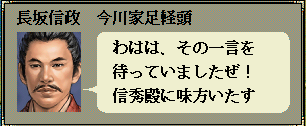

int カスタム::On_カスタム条件(string 条件名, カスタム条件パラメタ型 パラメタ) {
if ( 条件名 == "AS条件::戦争::内応結果可否" ) {
}
// 変更しない場合-1
return -1;
}

int カスタム::On_カスタム条件(string 条件名, カスタム条件パラメタ型 パラメタ) {
if ( 条件名 == "AS条件::戦争::内応結果可否" ) {
int iBushouID = パラメタ.整数1 -1; // 戦場にて内応を実行した、武将番号【配列用】
int iTargetID = パラメタ.整数2 -1; // 戦場にて内応を実行された、武将番号【配列用】
int iCurResult = パラメタ.整数3; // 現在この予定されている内容成否の結果。
デバッグ出力 << "主体:" << Get_名前(iBushouID) << endl;
デバッグ出力 << "客体:" << Get_名前(iTargetID) << endl;
デバッグ出力 << "現在の結果:(0=失敗,1=成功)" << iCurResult << endl;
// 範囲チェック
if ((0 <= iBushouID && iBushouID < 最大数::武将情報::配列数) &&
(0 <= iTargetID && iTargetID < 最大数::武将情報::配列数)) {
// 戦争において、内応を仕掛けられた側が、忠誠が100で、義理が15ならば、内応は失敗する。
if ( p武将情報[iTargetID].忠誠 == 100 && p武将情報[iTargetID].義理 == 15 ) {
return false;
}
}
}
// 変更しない場合-1
return -1;
}